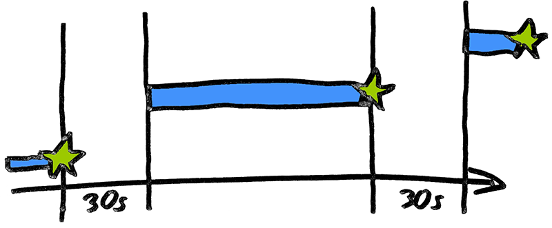

Why 'setTimeout' Is the Better 'setInterval' in JavaScript
(2019-03-03) setInterval and setTimeout are popular timer functions provided by the JavaScript environment (e.g., via the browsers window object). Not to be misunderstood: setInterval is not generally bad, there are some use cases for it. However, these are usually limited to very simple tasks. In this article, I want to show you a realistic use case, which occurs in many web apps.
In web apps, setInterval is often used to perform repetitive tasks, such as updating data from the server via an HTTP request (also called "polling").
// Call 'getApiData' every 30 seconds
window.setInterval(getApiData , 30000);
This is not a good approach. Not because "polling" is old-school (that's not), but the execution time of the function is unknown. Perhaps the internet is just bad, so the server response is received after 40 seconds. Undeterred, however, the client sends another request after 30 seconds. The internet connection is now even busier. And so on.
Here it makes more sense to wait 30 seconds between response and request. It does not matter how long it takes for the server to respond.

Now the responses are better distributed over time. The implementation is a bit more complicated:
const getApiData = async () => {
// Wait for HTTP response
const apiData = await httpRequest();
// Set timer
window.setTimeout(getApiData, 30000);
};
// Initial call
getApiData();
I use fancy ECMAScript 2017 syntax with async/await to keep the example short and concise. It's also possible to build it with promises or callback functions.
Let's extend the example to be more realistic. Remember that every await can throw an error. An error can have many reasons:
- The server is too busy and does not respond within a particular time (timeout)
- The client has temporarily no internet connection
- ...
An Error has to be caught:
const getApiData = async () => {
try {
// Wait for HTTP response
const apiData = await httpRequest();
} catch (e) { }
// Set timer
window.setTimeout(getApiData, 30000);
};
// Initial call
getApiData();
Looks better, but it's not good enough yet. Let's take another look at the error case: Once an error occurs, it will take another 30 seconds for another attempt to be made. That's way too long. You can set the timer inside at the end of the try block and another one inside the catch block. The last one should execute much faster. Here is the code:
const getApiData = async () => {
try {
// Wait for HTTP response
const apiData = await httpRequest();
// Set timer
window.setTimeout(getApiData, 30000);
} catch (e) {
// Try again
window.setTimeout(getApiData, 2000);
}
};
// Initial call
getApiData();
But why shouldn't we call the getApiData function immediately inside the catch block without any timer? There are a few reasons:
- If the error occurs immediately (e.g., the user has temporarily no internet connection, or it's a systematic fault), it will be tried again immediately. The error comes again immediately, etc. This process causes performance problems.
- The cause of an error is often a temporary effect caused by external influences. Time has to pass before the cause of the problem is resolved. That's why it makes no sense to try it again immediately.
- The direct self-call creates a recursion, which could also lead to performance problems.
Finally, let's assume we have a refresh button. The user should have the option to update the API data manually. After the user refreshes the API data manually, the automatic refresh should be reset and wait another 30 seconds. clearTimeout does the reset here. For this purpose, it is necessary to save the timer ID, which the function returns.
Here is the final code:
let timerId = null;
const getApiData = async () => {
// Clear timer first
window.clearTimeout(timerId);
try {
// Wait for HTTP response
const apiData = await httpRequest();
// Set timer
timerId = window.setTimeout(getApiData, 30000);
} catch (e) {
// Try again
timerId = window.setTimeout(getApiData, 2000);
}
};
// Refresh button pressed by user
myButton.addEventListener('click', getApiData);
// Initial call
getApiData();
As you can see, the code has become more extensive than you might have thought. A simple setInterval is no longer sufficient for this comparatively simple use case.
If you imagine your app has not just one, but multiple timers, it gets confusing very quickly. Here it is necessary to create a reusable basic structure or to create a kind of helper library.
It is fair to say, however, that setIntervall is not fundamentally unsuitable. For quite simple and uncritical tasks, setInterval can be the right solution.
Update (2019-11-15):
I have created a tiny timer library for this purpose. Check it out: https://github.com/cd/interval-handler
Back home